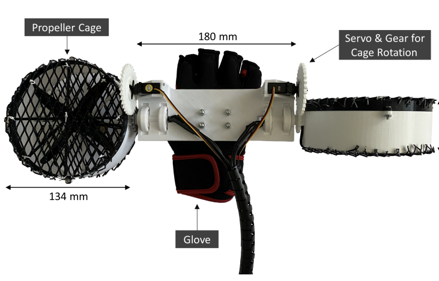

PropellerHand: Hand-Mounted, Propeller-Based Force Feedback Device


Venue. VINCI (2021)
Abstract. Immersive analytics is a fast growing field that is often applied in virtual reality (VR). VR environments often lack immersion due to missing sensory feedback when interacting with data. Existing haptic devices are often expensive, stationary, or occupy the user’s hand, preventing them from grasping objects or using a controller. We propose PropellerHand, an ungrounded hand-mounted haptic device with two rotatable propellers, that allows exerting forces on the hand without obstructing hand use. PropellerHand is able to simulate feedback such as weight and torque by generating thrust up to 11 N in 2-DOF and a torque of 1.87 Nm in 2-DOF. Its design builds on our experience from quantitative and qualitative experiments with different form factors and parts. We evaluated our final version through a qualitative user study in various VR scenarios that required participants to manipulate virtual objects in different ways, while changing between torques and directional forces. Results show that PropellerHand improves users’ immersion in virtual reality.
Link to this page: